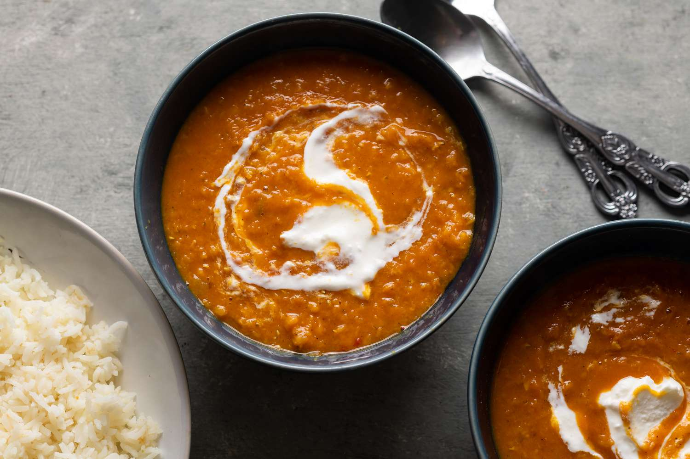

Lentil Dahl

Description
Dahl (also spelled dhal, daal, and dal) is essentially a thick South Asian-inspired lentil stew that is often prepared with ghee or clarified butter. This red lentil recipe for the popular Indian dish uses a little sesame oil for depth and flavor in place of the traditional ghee, which makes it vegan.
There is actually a wide range of dahls made from many different types of lentils and other vegetables called "pulses." Dried and split, they are cooked with various spices, meats, and vegetables. Options include red and yellow lentils, mung beans, lobiya (black-eyed peas), and chickpeas, among others. It's easy to modify a dahl to make it mild or spicy or to create a full dahl-based meal or a side dish.
This simple dahl soup is a favorite go-to recipe. It is easy to prepare with pantry staples and quick to make in one pot. Double or triple the recipe when you have a lot of mouths to feed. Any leftovers make a great lunch when served with flatbread and tea.
Ingredients
- 2 onions diced
- 3 garlic cloves, chopped
- 1 tbsp ginger, peeled and grated
- 1/2 tsp chilli flakes
- 1/2 tsp cumin seeds
- 1/2 tsp mustard seeds
- 2 tsp tumeric
- 1 tsp garam masala
- 200g dried red lentils
- 400ml coconut milk
- 400ml chopped tomatoes
- 500ml vegetable stock
- 2 handfuls fresh spinach
- Squeeze of lemon
Steps
- Heat a glug of oil in a large pan over a medium heat. Fry the onion gently for 5 minutes. Add the garlic, ginger and red chilli and cook for a few minutes more.
- Whilst that is cooking, grind the cumin, coriander and mustard seeds lightly in a pestle and mortar. Then add to the pan, along with the turmeric and garam masala and cook for 1 minute until fragrant.
- Add the lentils along with the tomatoes, coconut milk and stock, then stir to combine. Season with salt and pepper and cook on a medium/low heat until thick - at least 15-20 minutes (stirring often so that it doesn't stick to the pan).Taste and add more chilli if desired.
- Add a squeeze of lemon juice and the handfuls of spinach. Allow the spinach to wilt and then serve with your chosen accompaniment.